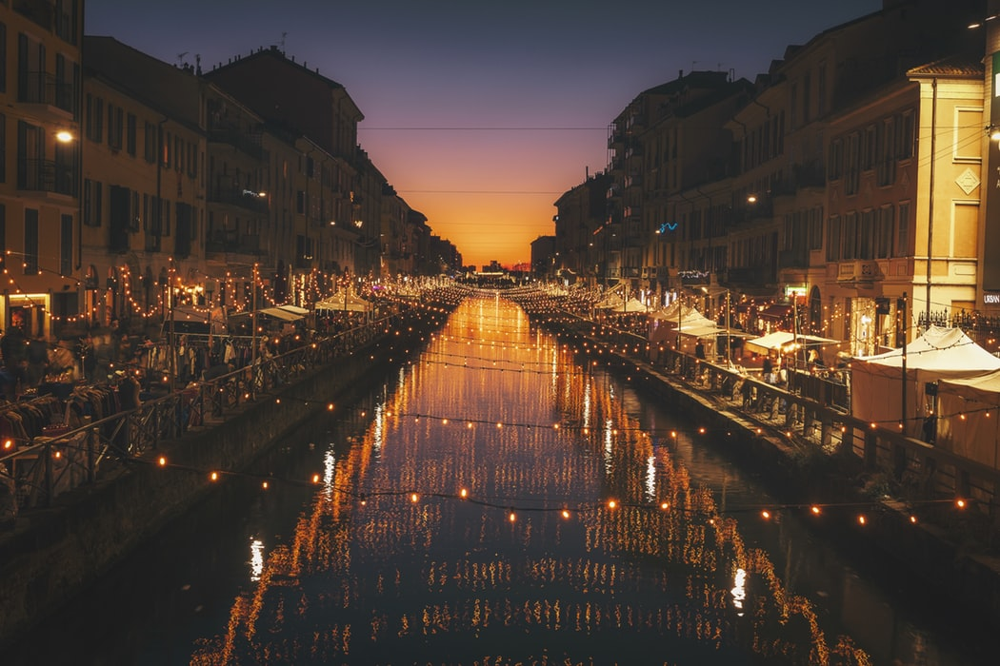
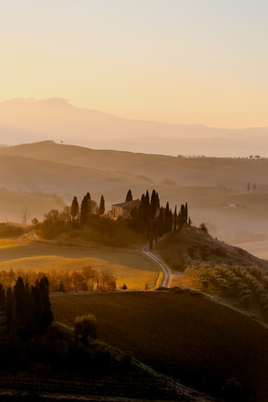
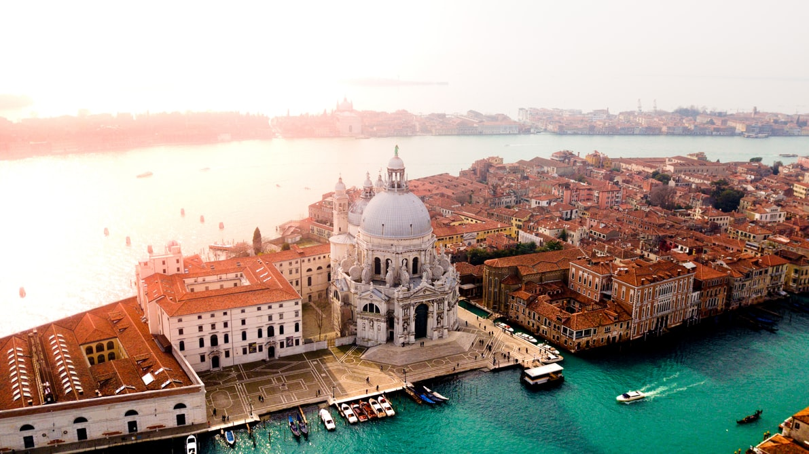
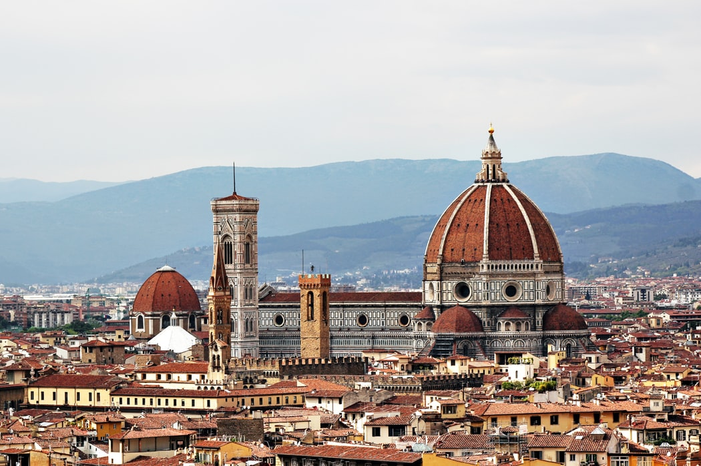
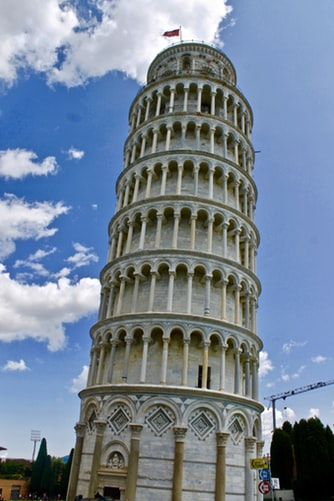

L'italie ou encore la Botte
Pourquoi visiter l’Italie ? L’Italie n’est pas un pays très grand, mais il recèle une myriade de trésors, qui méritent qu’on y revienne plusieurs fois. On pense notamment aux vestiges romains de Rome, de Naples (Pompéi, Herculaneum), mais aussi aux églises magnifiques qui se trouvent dans chaque ville.L’Italie c’est aussi et surtout des cités enchanteresses, où les amoureux rêvent ou ont rêvés d’aller, Venise en tête. Quelle que soit la région où vous vous rendez, vous flânerez dans les petits villages perchés dans la montagne, ou posés au bord de l’eau. La richesse culturelle et patrimoniale de ce pays ne laissera à coup sûr personne indifférent.On n’oublie pas le patrimoine gastronomique de l’Italie, lequel vous fera déguster les meilleures pizzas, mais ne mentionner que cette spécialité serait réducteur. Les charcuteries, les vins, et les plats liés à chaque région sont absolument délicieux et surprenants.Il y a tellement de destinations attractives qu’il semblerait que plusieurs pays se trouvent au sein de la même Italie. La Sicile ou la Sardaigne, par exemple, n’ayant parfois rien à voir avec la partie continentale. Visiter tour à tour toutes les régions vous ferez penser que vous arrivez dans un nouvel endroit à chaque fois, ce qui paradoxalement rend l’Italie attachante. Etant donné la proximité de ce pays avec la France, et sa position géographique en Europe, c’est une destination à privilégier largement !L’Italie se découvre aussi en croisière, ses côtes donnant sur les mers Méditerranée et Adriatique et permettant un accès aux différentes cultures régionales du pays appelé la Botte.


Venise
Venise est une des villes les plus incroyables d’Italie. La Cité des Doges est riche d’une longue histoire à la fois fascinante et tourmentée. Elle dispose d’un impressionnant patrimoine architectural et culturel. A ses édifices et palais historiques s’ajoutent des évènements internationaux comme le carnaval de Venise et d’innombrables musées tout aussi captivants. En parfaite harmonie, ils font de Venise l’un des principaux pôles touristiques du pays, mais aussi une destination les plus prisées au monde ! Pour ce qui est des voyageurs romantiques, Venise est aussi la référence en la matière. Si la Sérénissime a pâti des flux touristiques au cours des dernières années, elle demeure toujours une des cités les plus belles et merveilleuses que l’on puisse visiter. Alors si vous aussi vous souhaitez admirer les célèbres gondoles vénitiennes, ses canaux et ses palais, n’attendez plus et faites vos valises ! Vous retrouverez dans ce guide de voyage à Venise toutes les informations nécessaires pour découvrir la Cité des Doges. Attention cependant à bien choisir son créneau, car son atmosphère peut être étouffante tant elle est fréquentée par les touristes.

Rome
Rome est la capitale de l'Italie et surtout l'une des villes les plus célèbres et les plus visitées d'Europe. Elle fut pendant 5 siècles le centre de l'Empire romain qui domina l'Europe, l'Afrique du Nord et le Moyen Orient. Son centre historique est classé à l'Unesco : celui-ci abrite de nombreux monuments antiques comme le Colisée, le quartier du Forum romain, le Capitole, des aqueducs, mais aussi le lieu le plus important du catholicisme, la Cité du Vatican. Un Etat indépendant au sein de la cité ! Rome est aussi célèbre pour ses fontaines, et notamment la fontaine de Trevi, la plus grande et connue de la capitale italienne ! Elle doit également sa renommée à sa gastronomie, ses glaciers, ou encore sa vie étudiante et nocturne. En somme, Rome dispose de tous les atouts pour séduire et captiver ses visiteurs. Chacun, qu’il soit amateur d’Histoire, gourmand ou passionné d’art, saura trouver en Rome un petit bout de paradis. Véritable musée en plein air, Rome est donc une destination idéale pour une escapade d'un weekend comme d'une semaine autant pour les amoureux que pour les groupes d’amis. Vous avez prévu de découvrir la Cité Éternelle et son ambiance à la Dolce Vita ? On vous donne toutes les informations essentielles pour la visiter et apprécier votre séjour dans ce guide de voyage à Rome ! Il ne vous manquera alors plus qu’à faire vos valises pour profiter d’un voyage de rêve.

Florence
Nichée dans les Apennins, traversée par la rivière Arno, Florence est la capitale de la Toscane, une des plus belles régions de l’Italie, connue pour ses charmants villages et ses paysages magnifiques. Si cette région à elle seule vaut le détour, Florence reste tout de même l’attraction principale de la région. Considérée comme le berceau de la Renaissance, sa richesse culturelle et artistique est incroyable. Elle fait de Florence un des plus importants centres touristiques d’Italie, et à raison : la ville est classée au patrimoine mondial de l’Unesco et abrite quelques-uns des musées, des palais et des œuvres d’art les plus extraordinaires du monde ! Visiter Florence est un véritable voyage au cœur de la Renaissance, une période de l’histoire marquée par un art florissant. Votre séjour dans la ville des illustres Médicis représente alors une aventure culturelle à part entière qu’aucun voyageur ne souhaiterait manquer. Alors pour vous aider à préparer votre voyage dans « La Bella », une des cités les plus enchanteresses d’Italie, nous avons élaboré un guide de voyage sur Florence. Vous n’aurez plus qu’à faire vos valises pour découvrir cette destination romantique, culturelle et artistique exceptionnelle !

Pise
Située en Toscane, une des plus belles régions d’Italie, Pise est mondialement connue pour sa tour penchée. Alors que la ville possède des églises historiques, de nombreuses activités de plein air, une délicieuse cuisine et des musées de renommées, la plupart des visiteurs font simplement de Pise une escale depuis Florence pour prendre leur photo avec la tour. Mais il y a tellement plus à visiter à Pise que sa tour ! Pour la découvrir pleinement, Pise mérite au contraire d’y passer au moins une nuit ou deux. Peu de touristes restent plus d'une journée dans la ville alors si vous le faites, vous aurez la chance d'explorer Pise comme un local, loin des sentiers battus et rebattus par les touristes internationaux. Visiter Pise vous plongera au cœur d’un des sites les plus importants et les plus célèbres de la Renaissance, autrefois un port d’importance en Méditerranée rivalisant même avec les puissantes Gênes et Venise ! Les voyageurs pourront également s’imprégner de son ambiance étudiante et dynamique propice à de belles soirées. Vous souhaitez profiter d’une aventure plus locale et plus atypique qu’à Florence ? Alors découvrez dans ce guide de voyage à Pise tout ce qu’il faut savoir pour visiter cette ville d’art, d’histoire et de culture !
